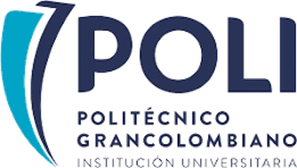
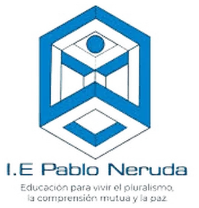
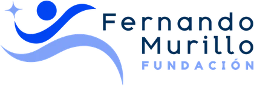

Alianzas
Dos instituciones, un mismo estudiante.
Trabajamos con colegios públicos, que abren el campo de intervención, y con instituciones de educación superior, que abren la puerta de salida.
Colegios
Acompañamiento integral a estudiantes de grado once, sin costo para la institución.
Convenio institucional que define alcance, grupos participantes, cronograma, responsables y tratamiento de datos.
- Diagnóstico individual y plan de trabajo por estudiante.
- Orientación profesional y medición de resultados.
- Informe de avance para la institución.
- Ruta de continuidad con instituciones de educación superior aliadas.
- Espacio y horario para las sesiones.
- Un enlace institucional en orientación o coordinación.
- Apoyo en la convocatoria y en la comunicación con acudientes.
- Gestión de los consentimientos informados.
Universidades
Alianzas formales orientadas a reducir la deserción estudiantil y a materializar, con resultados medibles, los compromisos de responsabilidad social.
Convenio que define el número y la naturaleza de los beneficios de acceso: becas, cupos priorizados, descuentos, exenciones o apoyos de bienestar. Los administra siempre la institución, conforme a sus políticas internas.
- Candidatos con diagnóstico previo y valoración documentada de perfil y contexto.
- Acompañamiento académico y psicosocial durante el convenio.
- Gestión de alertas tempranas de deserción.
- Reportes de permanencia y rendimiento, con valor para la autoevaluación institucional.
- Número de beneficios de acceso y condiciones de renovación.
- Un enlace institucional para admisión y seguimiento.
- Requisitos, calendarios y costos indirectos del programa.
- Evaluación conjunta al cierre de cada periodo.
Servicios complementarios
La deserción no se origina en la universidad. Se origina antes de la matrícula.
Las convocatorias de beca evalúan lo que cabe en un formulario: calificaciones, puntajes y clasificación socioeconómica. Esos datos no anticipan si un estudiante logrará sostener su proceso, y ninguna oficina de admisiones tiene cómo levantar los que sí lo predicen.
Para las instituciones que no requieren la alianza completa, los componentes del proceso se contratan por separado: el fortalecimiento de la selección de becarios, la orientación profesional en grado once, o el acompañamiento posterior a la matrícula.
Las condiciones se definen conjuntamente, según el alcance y el número de estudiantes.
Aliados
La Fundación mantiene cuatro alianzas activas con instituciones de educación superior, instituciones de educación media y organizaciones que complementan el acompañamiento.

assets/logos/politecnico-grancolombianoSVG o PNG transparente
assets/logos/ie-pablo-nerudaSVG o PNG transparente
assets/logos/fundacion-fernando-murilloSVG o PNG transparenteContáctanos
Si representas a una institución educativa interesada en una alianza, eres un estudiante que desea conocer el programa, o quieres apoyar la labor de la Fundación, escríbenos.
fundacionredconecta@gmail.com